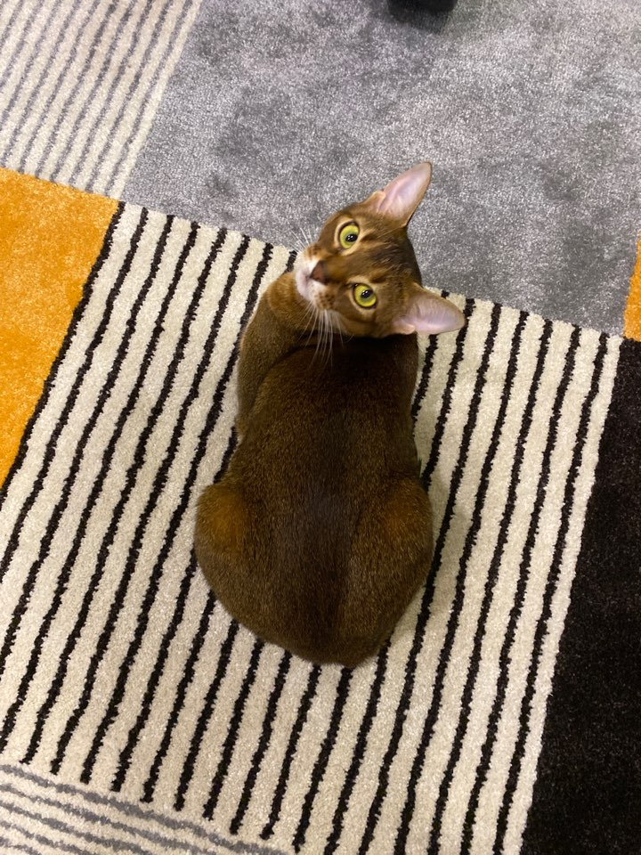

우리집 고양이들
너무 소중한 우리집 고양이들
루피(Roopie,5세)
밤비(Bambi,3세)
2. 둘째 밤비(女)

출생일
: 2017년 2월 경.
집에 온 날
: 2017년 4월 경.
데려온 사람
: 은비와 내가 차타구 델꼬왔찌.
어디에서 왔나?
: 얘두 인스타에서 가정묘 분양받음(책임비 60만원 드리고 모셔옴)
이름이 왜 밤비?
: 사슴같이 예뻐서
밤비
로 지었어요
Please enable JavaScript to view the
comments powered by Disqus.